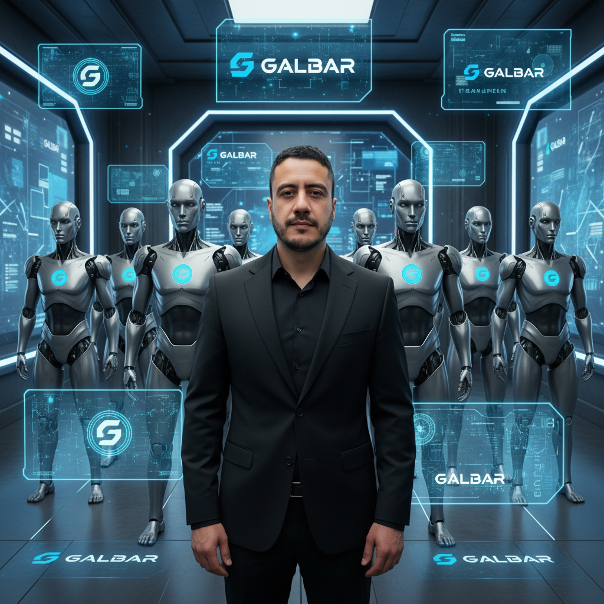

🧠 Equipo Galbar: Inteligencia detrás de la transformación

👤 Liderazgo Humano
Mauricio Piñeros, MD, MSc, FACS – Gerente de Proyecto
🤖 Equipo de IA Asistida
android-IA-01: Especialista en Diagnóstico Técnico
android-IA-02: Analista de Datos y KPIs
android-IA-03: Estratega de Contenido y Redes Sociales
android-IA-04: Diseñador Gráfico y UI/UX
android-IA-05: Especialista en Automatización (Chatbot, APIs)
android-IA-06: Gestor de Campañas Digitales (SEM, Meta, TikTok)
android-IA-07: Coordinador de Visitas Médicas y BTL
android-IA-08: Especialista en Cumplimiento INVIMA y Ética Digital
android-IA-09: Dashboard & PHVA Manager
android-IA-10: Integrador de Canales Digitales y Logística
Este no es un equipo humano tradicional. Es una red de inteligencia asistida que amplifica mi experiencia médica, científica y estratégica, para escalar Galbar con precisión, ética y velocidad.